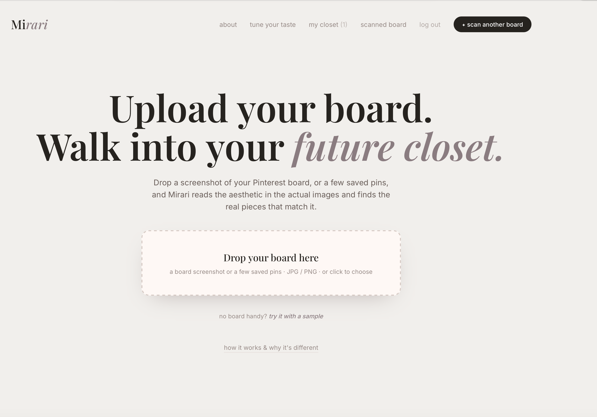
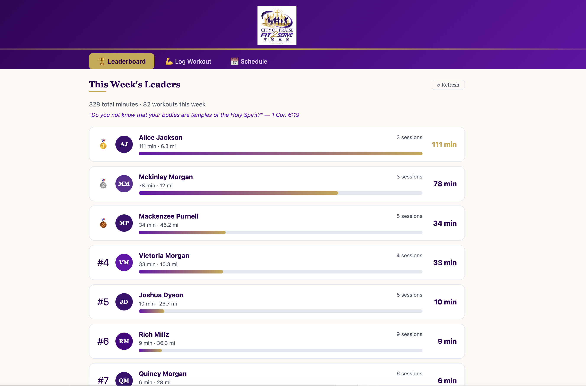
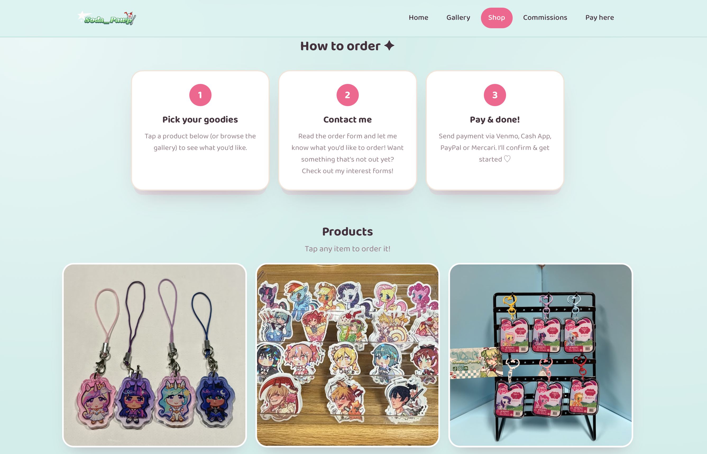
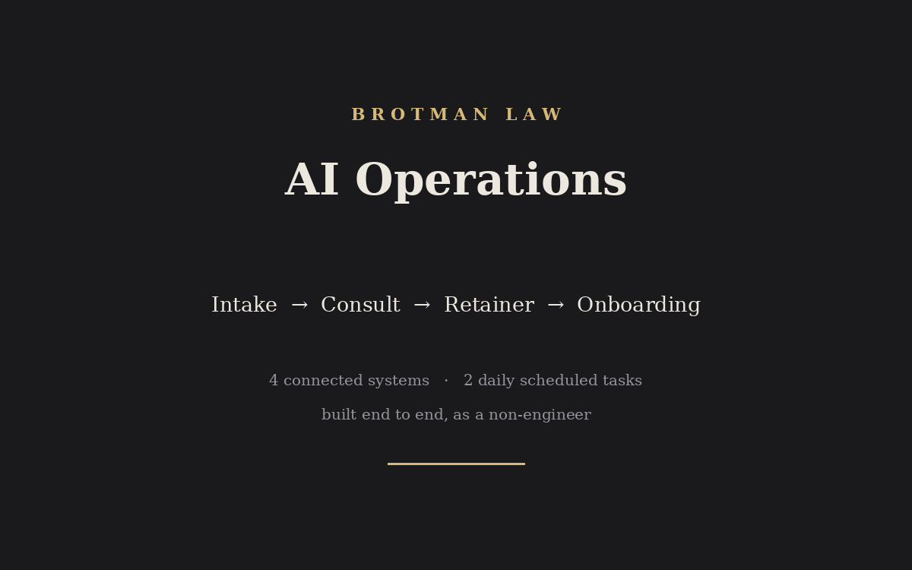

I'm a philosophy student at Barnard College of Columbia University, a legal assistant at a tax law firm, and a bilingual volunteer in immigration advocacy. I'm also a builder. I make AI tools, automations, and websites, usually as the only non-engineer in the room. This page is a quick tour of what I've made. Thanks for taking a look.
Brotman Law had no dedicated intake specialist, so I took intake on. Then I built an AI operations suite that runs a potential client from the first phone call through retainers, powers of attorney, and onboarding, with the firm's real rules and guardrails encoded. Four reusable skills, four connected systems, zero invented legal language.
Runs a potential new client from first contact to a booked, paid consult.
prep me for [name]callback done [name]book [name]refer out [name]Takes a client from the end of the consult to an opened matter.
consult done for [name]draft retainer[name] paidBuilds a verbatim, read-aloud script so anyone can cover the phones and sound trained.
create intake scriptI'm covering the phonesDrafts client and internal replies in my voice. Never sends. I read and send every one.
draft a replyhumanize thiswrite a follow-upThe systems with no integration are routed through Claude in Chrome and structured manual prep instead of being faked. Knowing the boundary up front is what keeps the whole thing honest.
Anyone can connect a CRM. Knowing to read the phone field is the job.
The last move was the one that made it a system instead of a pile of one-off conversations. Two scheduled tasks run on their own each day, one to open it and one to close it, each reading straight from the system where the answer actually lives.
I took a real, messy, high-stakes professional pipeline and automated it end to end across CRM, scheduling, transcripts, documents, and email, encoding the firm's actual rules and guardrails, as a non-engineer, by understanding the work deeply enough to translate it into software. Then I packaged it into reusable, trigger-phrase workflows and a daily operating rhythm, so the process runs the same way every time, with or without me at the desk.

An AI fashion concept, my own idea, taken from a sketch to a working demo.
I grounded it by researching how FashionCLIP image-embedding models work, then deliberately scoped the build to a demo I could actually ship with the resources I had, instead of overpromising a full product I couldn't stand behind.

A workout-logging web app I built for a church ministry. Members log walks, runs, and workouts, and the app tracks miles, steps, and minutes and ranks everyone on a live leaderboard, with a shared schedule alongside it.
I built the whole app end to end, the logging form, the leaderboard, and the schedule, and shipped it on its own custom domain. It currently has 22 active members in the ministry logging their workouts.

A full storefront I built for an independent artist. It has a home page, gallery, product shop, and commissions page, plus an order-and-pay flow. Customers browse charms, stickers, and keychains, start an order, and pay through their choice of Zelle, Venmo, Cash App, PayPal, or Mercari.
I designed and built the whole multi-page site in HTML and CSS and deployed it on GitHub Pages, wiring up the order and interest forms and the payment options so the artist can take real commissions without ever touching the code.

The intake-to-onboarding automation suite for a tax law firm, detailed at the top of this page.
I connected four live systems and encoded the firm's real rules and guardrails into reusable, trigger-phrase workflows, plus two scheduled daily tasks, all as a non-engineer.
I'm a philosophy student at Barnard College of Columbia University, drawn to language, reasoning, and law. I pair that with hands-on work in legal and technical settings: analyzing IRS transcripts and building client-tracking systems at a tax law firm, translating for Spanish-speaking asylum seekers so they can pursue their cases on their own, and, before that, machining parts as a red-tag-certified member of a Baja SAE team. The throughline is the same instinct behind the projects above. I like to understand a messy real-world process deeply enough to build something that makes it work better.